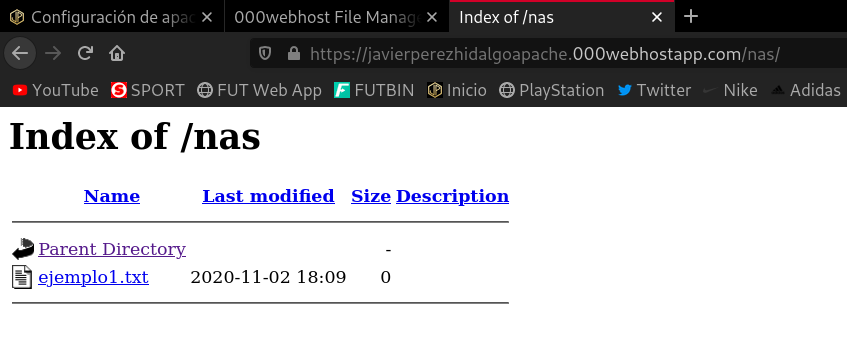
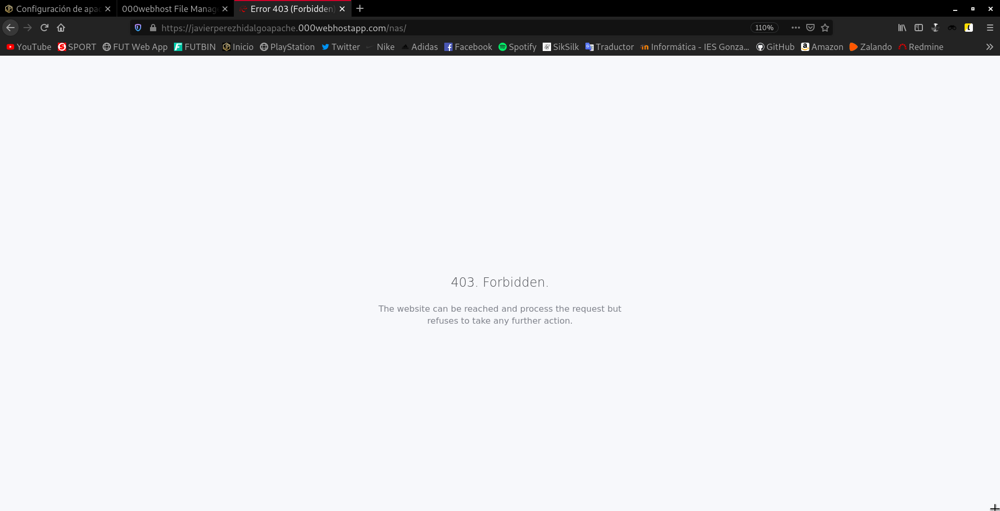
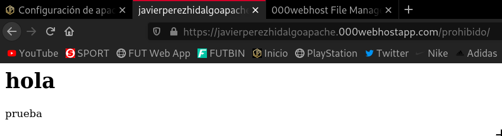

Configuración de apache mediante archivo .htaccess
Un fichero .htaccess (hypertext access), también conocido como archivo de configuración distribuida, es un fichero especial, popularizado por el Servidor HTTP Apache que nos permite definir diferentes directivas de configuración para cada directorio (con sus respectivos subdirectorios) sin necesidad de editar el archivo de configuración principal de Apache.
Para permitir el uso de los ficheros .htaccess o restringir las directivas que se pueden aplicar usamos la directiva AllowOverride, que puede ir acompañada de una o varias opciones: All, AuthConfig, FileInfo, Indexes, Limit, … Estudia para que sirve cada una de las opciones.
Ejercicios
Date de alta en un proveedor de hosting. ¿Si necesitamos configurar el servidor web que han configurado los administradores del proveedor?, ¿qué podemos hacer? Explica la directiva AllowOverride de apache2. Utilizando archivos .htaccess realiza las siguientes configuraciones:
Es importante asegurarnos de que el proveedor de hosting que vamos a utilizar tiene habilitada la directiva AllowOverride, ya que sino los cambios y configuraciones que hagamos en los ficheros .htaccess no van a tener ningún efecto.
En mi caso voy a utilizar 000webhost, para ello me he registrado previamente y he creado un sitio web al que se accede mediante https://javierperezhidalgoapache.000webhostapp.com.
1. Habilita el listado de ficheros en la URL http://host.dominio/nas.
Nos dirigimos al gestor de archivos de nuestra página, en este caso de 000webhost, y desde aquí vamos a realizar las configuraciones y los cambios en los archivos .htaccess, utilizo el plural porque ya adelanto que vamos a tener que utilizar más de uno.
Vamos a crear la carpeta nas dentro de public_html y vamos a crear un archivo de prueba.
Si probamos a acceder a la dirección https://javierperezhidalgoapache.000webhostapp.com/nas/ podemos ver como efectivamente nos muestra el listado de ficheros:

Pero esto nos lo muestra porque por defecto viene habilitada la opción Indexes para todos los directorios hijos de public_html, por tanto no tendría ningún misterio hacerlo así. Por eso he decidido quitar esta opción y volver a configurarla de manera manual. Para ello, en el .htaccess que se encuentra en public_html he introducido la siguiente línea:
Options -Indexes
Si accedemos ahora a https://javierperezhidalgoapache.000webhostapp.com/nas/:

Vemos como ya no nos muestra el listado de ficheros, entonces ahora voy a configurar esta opción en el .htaccess que he creado en la carpeta /nas y voy a introducir la siguiente línea:
Options +Indexes
Accedemos de nuevo a https://javierperezhidalgoapache.000webhostapp.com/nas/:
Ahora sí hemos realizado la configuración de manera correcta.
2. Crea una redirección permanente: cuando entremos en ttp://host.dominio/google salte a www.google.es.
En el fichero .htaccess de public_html introducimos la siguiente línea para que nos haga la redirección:
Redirect /google https://www.google.es
De esta manera, cuando accedamos a la dirección https://javierperezhidalgoapache.000webhostapp.com/google nos va a redirigir automáticamente a la dirección https://www.google.es.
3. Pedir autentificación para entrar en la URL http://host.dominio/prohibido. (No la hagas si has elegido como proveedor CDMON, en la plataforma de prueba, no funciona.)
Voy a utilizar una autenticación de tipo Digest.
Vamos a crear un fichero donde vamos a guardar las credenciales, que deben estar seguras. Por esta razón no podemos guardar este fichero dentro de public_html, ya que lo que se encuentra en él, es todo lo que muestra la página, así que este fichero lo crearemos a su mismo nivel, es decir, en el directorio /.
Generamos las credenciales:
root@servidor:~# htdigest -c ./htdigest prohibido javier Adding password for javier in realm prohibido. New password: Re-type new password: root@servidor:~# cat htdigest javier:prohibido:fa09dc88b5d3c47ca6c0b51b3fb54d4c
Y ahora vamos a copiar la línea que hemos generado y la incluiremos dentro de nuestro fichero de contraseñas, que se llamará htdigest.
Creamos el directorio prohibido dentro de public_html, y dentro de este directorio un nuevo .htaccess, con estas líneas:
AuthType Digest AuthName "gruposecreto" AuthUserFile /storage/ssd2/013/15299013/htdigest Require valid-user
¿Por qué he puesto esa ruta en el apartado AuthUserFile?
Pues porque realmente, el directorio / donde hemos creado el fichero htdigest, no es realmente un directorio /, sino que se trata de una ruta virtual, que corresponde realmente a la ruta /storage/ssd2/013/15299013.
Esta información la podemos encontrar aquí:
Vemos como efectivamente el directorio es /storage/ssd2/013/15299013:
Si probamos a acceder a la dirección https://javierperezhidalgoapache.000webhostapp.com/prohibido nos pide las credenciales necesarias para mostrar la página.
Si introducimos correctamente el usuario y contraseña, nos muestra la página que he creado con un simple index.html:
